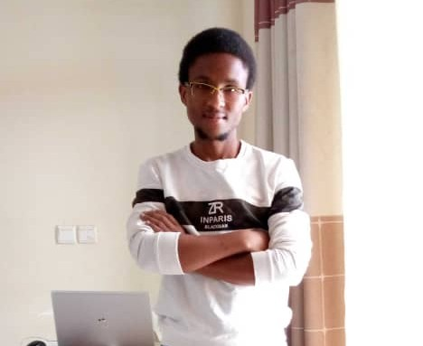

Hello, I am
Khotso Selialia
Ph.D. Candidate, Electical and Computer Engineering · University of Massachusetts Amherst
I am a Ph.D. candidate in Electrical and Computer Engineering at the University of Massachusetts Amherst, advised by Prof. Fatima Anwar. I build machine learning systems for trustworthy and fair decision-making, with research spanning federated learning, algorithmic fairness, multilingual NLP, and privacy-preserving optimization.
My research sits at the intersection of responsible AI, distributed optimization, and multilingual machine learning, with a broader goal of designing systems that perform reliably across diverse populations and resource constraints.
Core areas include federated learning, algorithmic fairness, multilingual and low-resource NLP, large language models, parameter-efficient fine-tuning, differential privacy, and optimization stability.

News
- Apr 2026 DCARPE was selected for publication at ACL 2026 — see you in San Diego!
- Dec 2025 Our paper, “Lost in Tracking Translation,” was published in ACM Transactions on Sensor Networks.
- Nov 2025 Successfully passed my Ph.D. proposal defense!
- Oct 2024 Our paper, “A Neurosymbolic Approach to Adaptive Feature Extraction in SLAM,” was accepted at IROS 2024 — see you in Abu Dhabi!
- Jun 2024 Our paper, “Mitigating Group Bias in Federated Learning for Heterogeneous Devices,” was accepted at ACM FAccT 2024 — see you in Rio de Janeiro!
Publications & Research
Selected work.
Fragmentation-Aware Decoder Layer Dropping for Memory-Efficient Multilingual Translation
Research in progress
Mitigating Tokenization-Induced Distance Distortion in Long-Context Multilingual Machine Translation
Research manuscript
Curriculum Vitae
Academic background, research, publications, and experience
Upload your CV to files/Khotso_Selialia_CV.pdf to activate this button.